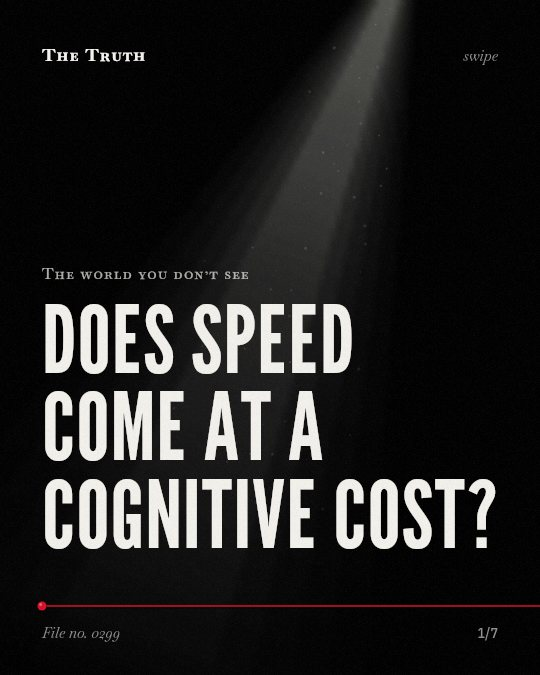

The world you don’t see
Does speed come at a cognitive cost?

Faster digital speeds are linked to quicker responses in life-critical situations.
While high-speed digital environments increase cognitive load and emotional exhaustion, they also correlate with faster information flow and quicker engagement in critical contexts.
Established. Several studies combined, or official data. The evidence is mixed.
What the research found
Quicker engagement in virtual surroundings causes a quicker flow of information and faster response to contexts in life-critical situations.
“At the same time, the data suggest that quicker engagement in the virtual surroundings causes a quicker flow of information and faster response to contexts in life-critical situations.”
Systematic review, 2026. Tripathy et al., Acta psychologica. This shows a link, not a cause.
Emotional exhaustion is a mediating mechanism explaining how technostress creators correlate with cognitive overload.
“Second, it reveals emotional exhaustion as a novel mediating mechanism explaining how technostress creators correlate with cognitive overload.”
Experiment, 2026. Hashmi et al., BMC Psychology.
High-stress participants experienced cognitive overload and consequently decreased performance when using kiosks.
“Overall, under technostress, high-stress participants experienced cognitive overload and consequently decreased performance; whereas, low-stress participants felt moderate arousal and improved performance.”
Study, 2022. Kim et al., Information Processing & Management.
As the speed of digital environments increases, so too do cognitive load, attentional fragmentation, self-regulatory depletion, emotional reactivity, technostress, and emotional exhaustion.
“The findings suggest that as the speed of digital environments increases, so too do cognitive load, attentional fragmentation, self-regulatory depletion, emotional reactivity, technostress, and emotional exhaustion.”
Systematic review, 2026. Tripathy et al., Acta psychologica.
Technostress is positively associated with cognitive overload among higher education students.
“First, it extends technostress research by identifying cognitive overload as positively associated with technostress creators among higher education students.”
Experiment, 2026. Hashmi et al., BMC Psychology.
Higher technostress increases cognitive load.
“Findings indicated a significant direct effect of technostress on cognitive load, suggesting higher technostress increases cognitive load.”
Study, 2025. Demir & Lüta, Advances in computational intelligence and robotics book series.
The cost of digital speed.
As digital environments accelerate, they increase cognitive load, attentional fragmentation, and emotional exhaustion. Technostress acts as a mediating mechanism for this overload.
The trade-off of constant connectivity.
That may be why you feel mentally drained even when your actions are efficient. Your brain may be trading emotional stability for speed.
This part is our reading of the evidence, not a finding.
The late night scroll.
You sit in a dark room. You swipe through a feed. Your eyes move fast. Your brain processes a constant stream of data while your body sits still.
The honest summary
The evidence confirms that technostress and digital speed increase cognitive load and emotional exhaustion, but it also highlights functional benefits like faster responses in critical contexts.
The sources do not provide specific data on 'idle devices' or 'cortisol levels' as mentioned in the proposed angle.
What is the price of your speed?
Sources
- Yuwon Kim, Hahyeon Park, Hongbum Kim et al. (2022). Technostress causes cognitive overload in high-stress people: Eye tracking analysis in a virtual kiosk test. Information Processing & Management. Study, cited 112 times.
- Hashmi ZF, Iqbal J, Asghar MZ, Abid MN (2026). How technostress creators are associated with cognitive overload: the mediating role of emotional exhaustion in academia. BMC Psychology. Experiment, cited 2 times.
- Bora Demir, Kadir Lüta (2025). The Mediating Role of AI Literacy in the Relationship Between Technostress and Cognitive Load in Higher Education. Advances in computational intelligence and robotics book series. Study, cited 5 times.
- Tripathy S, Panigrahi RR, Mukherjee S, Jibril AB, Hossain MB (2026). Psychology at digital speed: A systematic review of how rapid online interaction alters cognitive and affective processes. Acta psychologica. Systematic review.
Also read for this file, not quoted
- Mansuroğlu & Smith (2026). Technostress and employee well-being: A systematic review of empirical evidence.
- Kupang et al. (2024). Unpacking Technostress: A Systematic Review on its Effects and Mitigation.
This file was researched and drafted by software, then checked by rules a model cannot talk its way around: each quote above was matched word for word against the paper, and every number had to appear in it. How files are made.